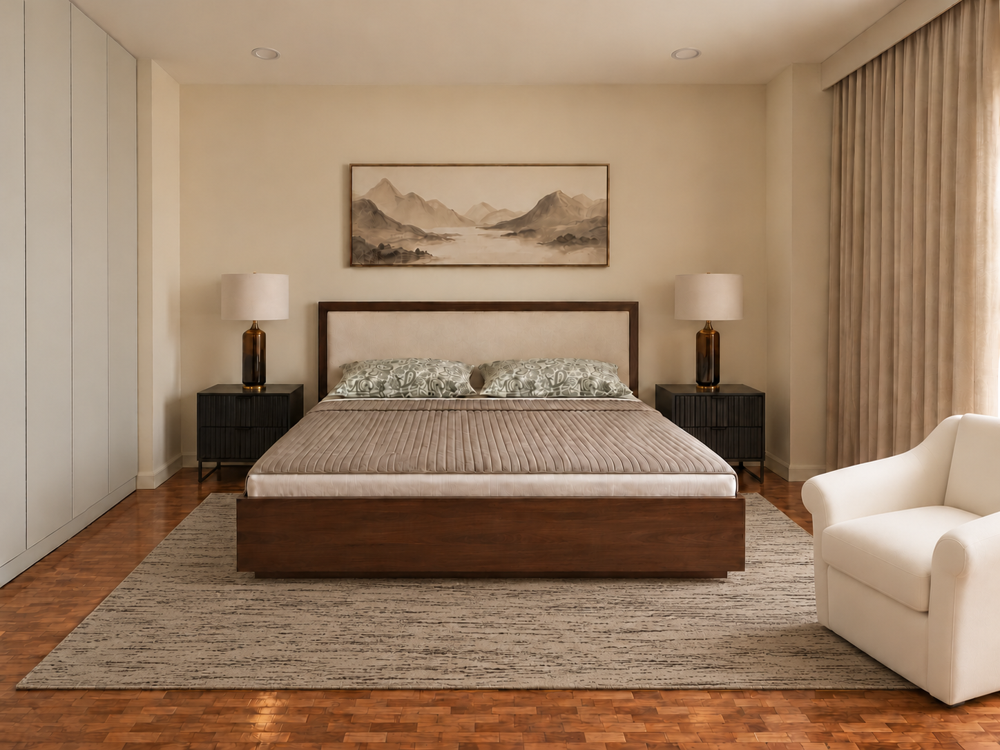
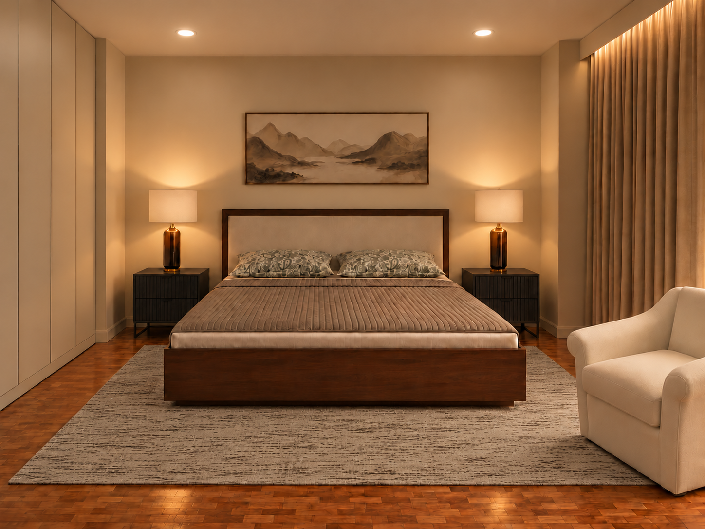
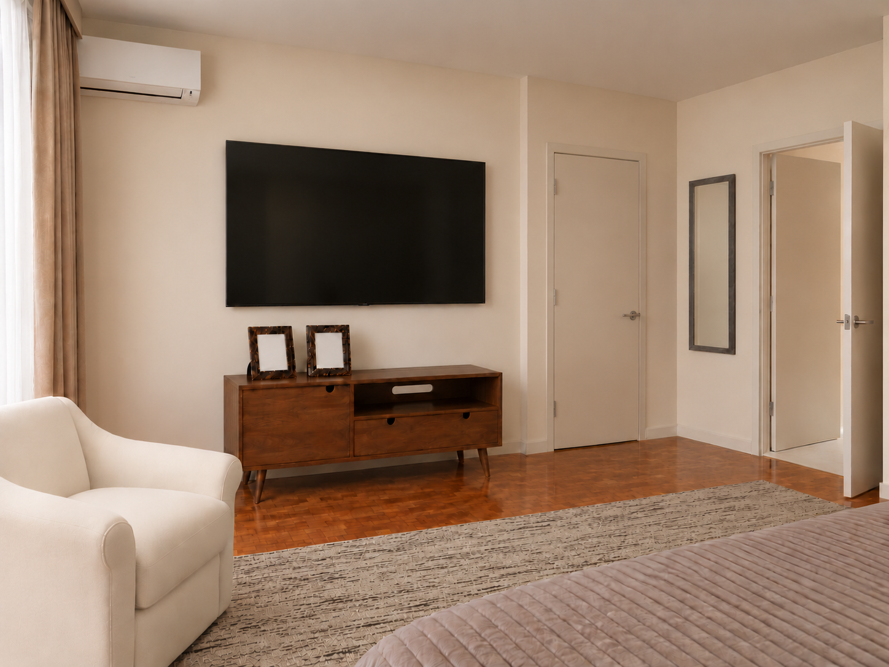
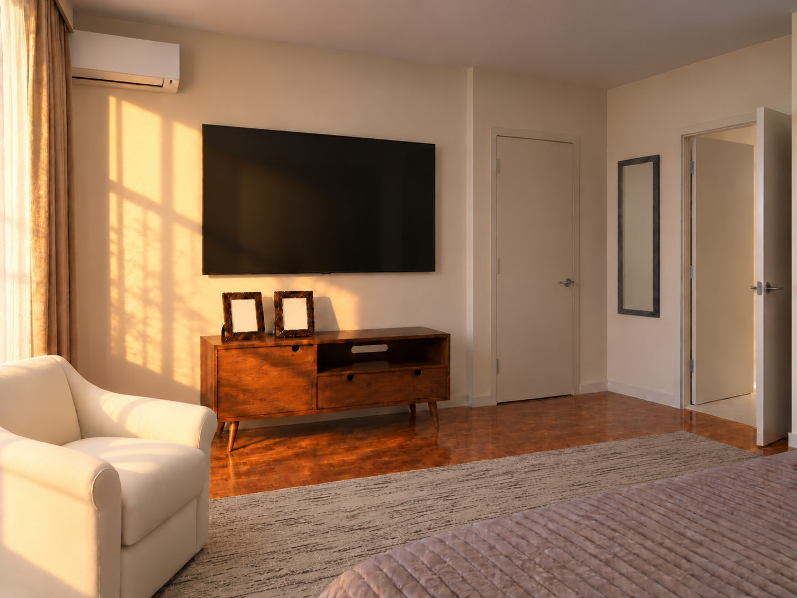
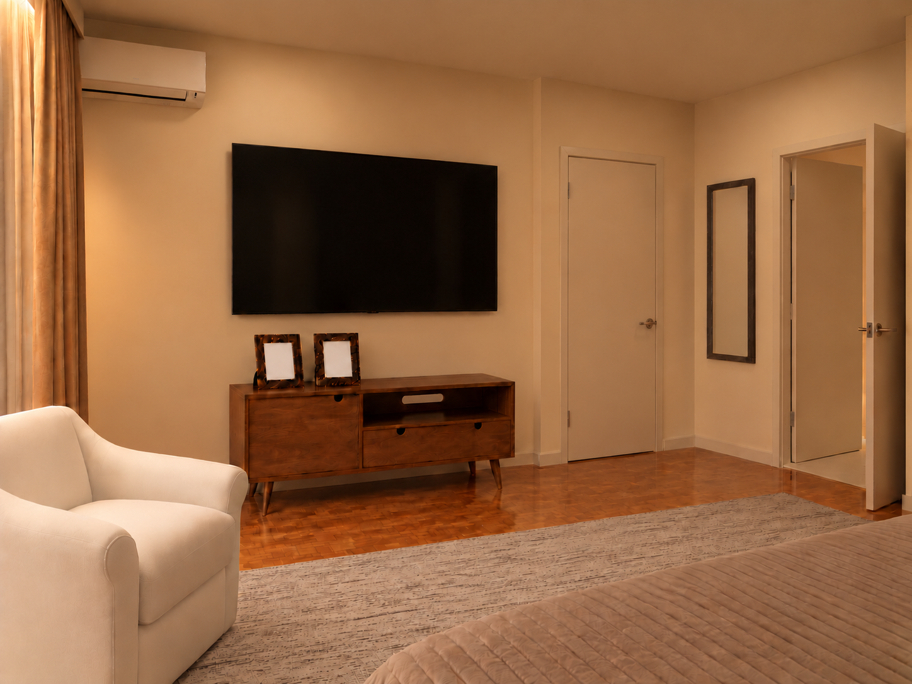

P · Walnut Atelier
Supplier photographs govern the purchase. Wilke artwork unavailable; bedside finish conflict and made-to-order lead time unresolved.
Actual supplier chair photograph and source

Visible upholstery and material likeness are checked against the source photograph; an unavailable variant or unverified detail remains conditional.
Source photograph SHA-256: ca166d57e37393fa5853b042f2cdc66b9a3655207bfdddd20318222a04fe62bb

Passed visual source/material and same-camera review; fit remains conditional.
Selected image SHA-256: d454d684fa2b912c0e13460fa2f65516ca606b395b9bbe6ec3ef7eabeec92972
Earlier source image SHA-256: 05740b36464f5735a80ee464ff3fea9a8eb51e07828b266d86b24cfd242cab30

Passed visual source/material and same-camera review; fit remains conditional.
Selected image SHA-256: aec6d14fe1491cb7e334516aebcba817b6bac871a2bdeefede47f2e7b19c84e8
Earlier source image SHA-256: adf8a8781b6abc396267727968f1ba0c168c83cca8533b02b61cf8dac8476624

Passed visual source/material and same-camera review; fit remains conditional.
Selected image SHA-256: ef9ab51cc8d3cf60e7de9beff4df0cee82ea67c5adbd1d6ce359b9f751d5877b
Earlier source image SHA-256: 1506e555c6717186054d209287f019f80ffbd02c478f8e66fcd77663bcc361ee

Passed visual source/material and same-camera review; fit remains conditional.
Selected image SHA-256: e23135e351ad0700faa75bd29ab9348c9259beda95d58719cbe6bcbce3790293
Earlier source image SHA-256: 1506e555c6717186054d209287f019f80ffbd02c478f8e66fcd77663bcc361ee

Passed visual source/material and same-camera review; fit remains conditional.
Selected image SHA-256: bc7fc39ce07956fca3bff481cd5c2bbfab4e453df2bf2b49936ba086d956cb6f
Earlier source image SHA-256: 760b9611a972d55ecc255329f4ce9960802fb1e550f2764825e0286ea3bfd905
Current source-sized planning layout · geometry reference; physical fit remains conditional.